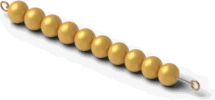
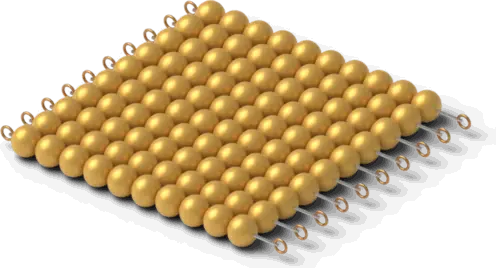
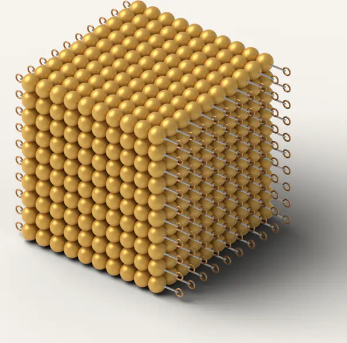
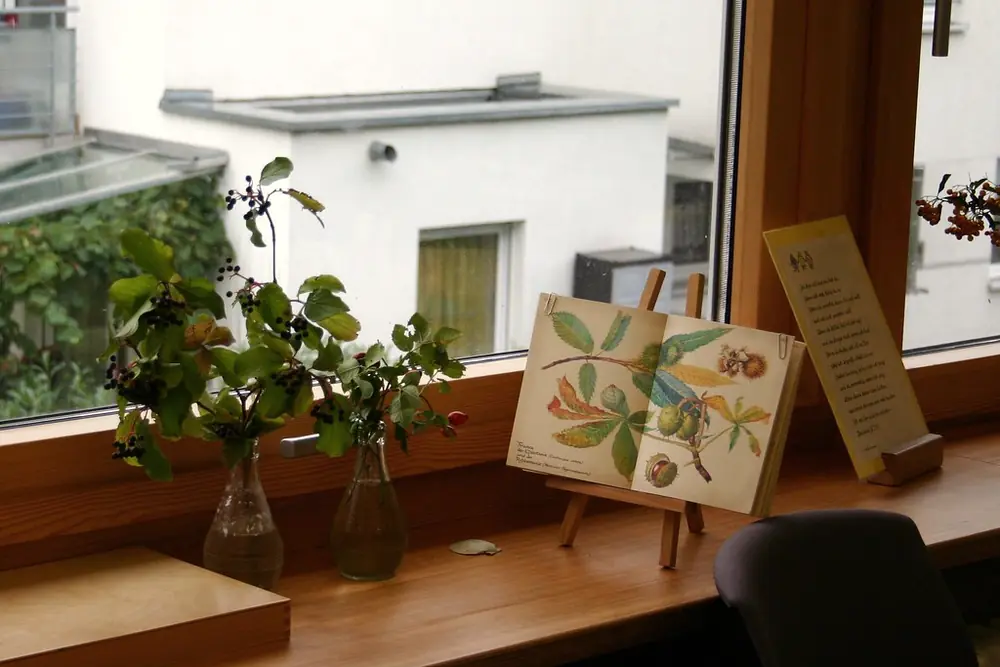

The work, age by age
1unit

10ten

100hundred

1000thousand
Golden beads
Place value you can hold. A child carries the thousand-cube in two hands and feels its weight, so “a thousand” means something before it is a written number.
A day in Children’s House: arrive at 8:15 and hang up your coat, then a three-hour work period, outdoors, and lunch together. Younger children rest; older ones do afternoon work.

Montessori, plainly
Montessori is a way of teaching that began in Rome in 1907 with Dr. Maria Montessori, a physician. Children work with real materials, choose their work within clear limits, and move at their own pace in mixed-age classrooms, with a trained teacher who watches and guides each child.
- Isn’t it just play?
- It is work the child chooses. Every material teaches one thing on purpose, and it shows the child their own mistakes: a cylinder that doesn’t fit, a tower that leans. Children learn to correct themselves without waiting for an adult.
- Can children do whatever they want?
- Freedom within limits. Children choose from work they have been shown, finish what they start and put it back on the shelf for the next child. The teacher keeps a record of every child’s work and steps in when needed.
- Why are ages mixed?
- Each class spans three years. Younger children learn by watching older ones, and older children learn by helping. Your child keeps the same teacher for three years.
- Will my child be ready for another school later?
- We track the same reading and math skills public schools expect at each grade, and we show you where your child stands at every conference. Families who move on take a full written report with them.
- Is it religious?
- No. Fernhill is independent and nonsectarian. Families of every faith, and of none, are welcome.
Is it academic enough?
Yes. Children understand with their hands first, then do the same steps on paper. Ages are typical, not deadlines.
| Age | Math | Reading and writing |
|---|---|---|
| 3–6Children’s House | Golden beads and the stamp game: place value, then adding and subtracting into the thousands. | Sandpaper letters and the moveable alphabet, then first books in English and Spanish. |
| 6–9Lower Elementary | The bead stair and bead chains: math facts, skip counting, squares and cubes. | Grammar symbols and sentence analysis; first written reports. |
| 9–12Upper Elementary | The checkerboard and fraction insets: long multiplication and fractions, then the same steps on paper. | Research questions they choose, written up and presented to the class. |
| 12–14Adolescent | Pre-algebra and algebra, ready for high school. | Essays and seminars: arguing a point in writing and out loud. |
By the end of Children’s House, many children read short books and add numbers into the thousands with the beads. At each conference we show you exactly where your child is, in plain words, with the work in front of you.
Observe a class
The best way to understand Montessori is to watch it. Sit quietly at the side of a real classroom for 45 minutes, then talk with the head of school.
- Tuesday and Thursday mornings, during the work period
- Parents only, so the children keep working as usual
- In English or Spanish
- We text you within one school day to confirm
You’re on the list
Fernhill Montessori School · (978) 555-0136
Programs, hours and cost
Every program runs Monday to Friday, September to June. Tuition is paid over 10 months. All figures are samples for this demo.
| Program | Hours | Per year | Per month (10) |
|---|---|---|---|
| Toddler18 months to 3 | HoursMornings 8:15–11:45, or full day to 3:00 | Per year$11,200 / $15,900 | Per month (10)$1,120 / $1,590 |
| Children’s House3 to 6, including kindergarten | HoursHalf day 8:15–11:45, or full day to 3:00 | Per year$9,800 / $14,600 | Per month (10)$980 / $1,460 |
| Lower Elementary6 to 9, grades 1–3 | Hours8:15–3:15 | Per year$16,400 | Per month (10)$1,640 |
| Upper Elementary9 to 12, grades 4–6 | Hours8:15–3:15 | Per year$17,200 | Per month (10)$1,720 |
| Adolescent12 to 14, grades 7–8 | Hours8:15–3:30 | Per year$18,500 | Per month (10)$1,850 |
Tuition help is based on need, not grades. About 1 in 3 families receive some (sample). Ask us in English or Spanish; the answer is private.
For current families
Coming up
- Nov 10, 12Observation mornings, 8:45 and 9:30 AM
- Nov 11Veterans Day: no school
- Nov 14Open house, 10 AM to noon. Children welcome
- Nov 25–27Thanksgiving break: no school
- Dec 3Family work night: your child shows you their work, 6 PM
- Dec 21–Jan 1Winter break